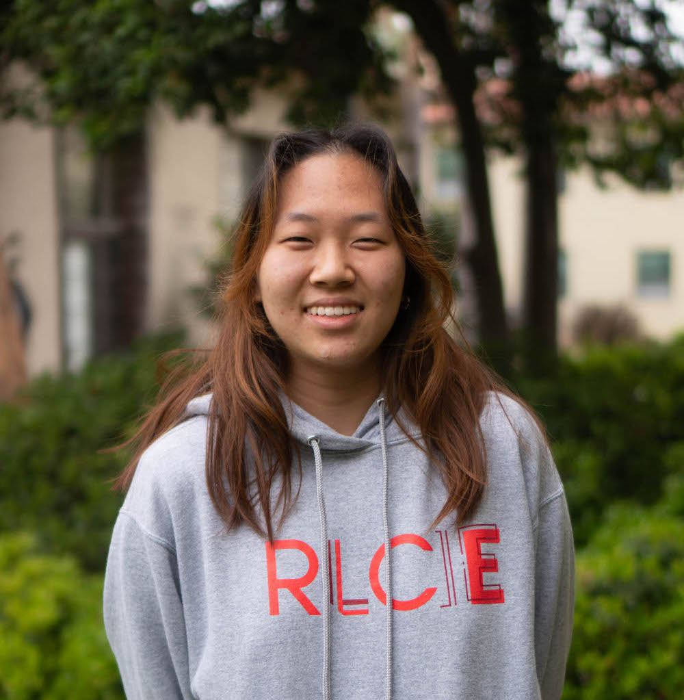

If she was able to put her academic interests first, Michelle Lee PO ’25 would have likely majored in philosophy.
“I need to find a way to be able to pay [tuition] off ... when I get out of college,” Lee said. (Samson Zhang • The Student Life)
But owing to the “burden of having [a] family contribution being higher than [she’s] comfortable with,” Lee has turned to a major that she thinks may have a better return on investment right after graduation — public policy analysis with a concentration in economics.
“Pursuing your intellectual curiosity is an essential part of college,” she said. However, to manage the cost of a Pomona College education, Lee feels that she has no other choice than to view her college experience through an economical standpoint.
She has wondered how she might have directed her college studies differently if she wasn’t burdened by financial stressors.
THE COST OF INCREASING COSTS
Accounting for tuition increases at the 5Cs
by Samson Zhang, Rya Jetha, Mariana Duran, Reia Li and Jenna McMurtry
Ava Francis-Hall, Julia Schwartz and Katherine Tan also contributed reporting
May 99, 2022
Earlier this semester, Pomona College, Claremont McKenna College and Pitzer College announced plans to increase their respective tuition by 4.5 percent for the upcoming 2022-23 school year. Scripps College will follow suit with an increase to its tuition by 3.9 percent, and Harvey Mudd will increase its tuition by 3.5 percent.
The increases are in line with a median tuition increase of 3.7 percent across “top colleges,” according to a Forbes report.
Since the 2013-14 school year, tuition has increased by more than 29 percent at each of the 5Cs, outpacing national, Los Angeles County and California inflation rates in the same time period.
How do the 5Cs spend money?
When asked why the colleges have raised tuition by more than inflation rates, spokespeople for the colleges pointed to rising expenses in categories that range from faculty salaries to residence hall renovations.
The reports are available as PDFs here: Claremont McKenna • Harvey Mudd • Pitzer • Pomona • Scripps
Harvey Mudd financial statements before 2018-19 were not available on the college’s website, but were provided by a college spokesperson upon request.
TSL reviewed the past eight years of each 5C school’s audited financial statements to investigate exactly which costs are increasing and how the burden falls on students.
Total spending varies by school, ranging from $62M at Pitzer to $179M at Pomona in the 2019-20 school year.
The schools have a range of student populations. Per student, spending ranged from $58K at Pitzer to $104K at Pomona in 2019-20.
Though each 5C school categorizes their expenses in a slightly different way, the reports show that spending generally falls into three large groups.
Academics† are the biggest spending category at every 5C school. This includes faculty and staff salaries, faculty and student research grants, academic department expenses and related spending on The Hive, the Benton Museum and each college’s libraries.
†”academic programs” at Scripps and Pitzer; “instruction”, “research” and “academic support” at Claremont McKenna, Harvey Mudd and Pomona. Expenses related to the Dean of Students and Registrar offices are included in the former two schools but fall under “student services” in the latter.
Co-curricular spending is the next biggest spending category. It includes residential life, dining and catering services, career development, mentorship groups, athletics, and other student support programs.†
†”co-curricular programs” at Scripps and Pitzer, “auxiliary enterprises” and “student services” at CMC, HMC and Pomona. “Student services” includes admissions, financial aid and registrar offices, while these expenses are categorized under “marketing,” “marketing” and “academic programs” respectively by schools that use those categories.
Institutional support† is the last major spending category, including administrative, finance, investment, alumni relations and communications offices, as well as admissions and financial aid at Scripps and Pitzer.†
†”institutional support” at CMC, HMC and Pomona, “marketing” and “general and administrative” at Scripps and Pitzer.
Per-student expenses increased by more than national inflation at all 5C schools except Pitzer from 2013-14 to 2019-20. At Pitzer, per-student spending increased at just under the rate of national inflation.
View expensesMary Lou Woods, assistant vice president and associate treasurer of Pomona College, said that rising expectations for school services have been a key driver of increased spending.
“The expectations of what the world wants us to provide continue to rise,” Woods said. “As students and families are weighing their options of different institutions, they’re [asking], is there a health and wellness center? Is there a rock climbing wall? There is a desire to have a very hands on student affairs [and support in addition to] the instruction side.”
Rachael Warecki, a spokesperson for Scripps, also pointed to increased co-curricular spending as a key reason for increasing expenses.
“Costs related to the addition of a new Residence Hall, together with major renovations to several other Residence Halls, including the addition of air conditioning and addressing ADA accessibility, was a major driver of costs in co-curricular expenditures for [Scripps] College over recent years,” she said.

Residence hall renovations were major contributors to expenditure increases at Scripps, according to Warecki. (Janey Matejka • The Student Life)
Academic and institutional support expenses have also increased.
According to Rob Goldberg, Pomona Chief Operating Officer and Treasurer, part of the increase stems from the need to provide competitive salaries.
“Over 50% of our budget covers salaries and benefits for our faculty and staff and each year we increase compensation to keep up with higher costs of living and to recruit and attract the best faculty and staff we can,” he said in an email.
Judy Augsburger, a spokesperson for Harvey Mudd, said that a 2013 ten-year growth plan was a key reason for the steepness of the college’s tuition increases since 2011-12. The plan called for increasing faculty, staff and facility resources to accommodate 900 students by 2023. Harvey Mudd had 902 full-time undergraduate students in 2021-22, up from 777 in 2011-12.
Broadly, “people, insurance, food and utilities” were responsible for the greatest increases in Pitzer’s expenses, spokesperson Wendy Shattuck said via email.
Financial aid alleviates some, but not all, consequences of rising costs
But increasing expenses don’t tell the whole story. Tuition increased more than expenses per student at all 5C schools except Claremont McKenna from 2013-14 to 2019-20.
Financial aid officers and spokespeople at the 5Cs told TSL that each school has increased their financial aid budget in the past 10 years to keep pace with cost of attendance increases.
All 5C schools cover 100 percent of demonstrated need, according to the schools’ financial aid websites.
From 2013-14 to 2019-20, the amount of financial aid awarded each year grew at a faster rate than tuition at CMC, Pomona and Pitzer. At Scripps, financial aid increased by less than tuition in the same time period.
The average cost of attendance for students who receive need-based financial aid has not increased relative to national inflation at Pomona and Scripps since 2013-14, though this is not the case at Pitzer or CMC.
Number of students awarded financial aid as
Average cost of attendance for students awarded aid vs.
Even when financial aid is available, schools admit a mix of students with families who are able to afford full tuition with those who have financial need, especially at schools with need-aware admissions policies.
Harvey Mudd, CMC and Pomona have need-blind policies for domestic students, but are need-aware for international applicants. Both Scripps and Pitzer have need-aware policies in place for all applicants, meaning those who can pay full tuition may be favored in the application process over those who cannot.
Of the Claremont Colleges, Scripps and Pitzer are need-aware for domestic students, while Pomona, Claremont McKenna, and Harvey Mudd are need-blind. All 5C schools are need-aware for international students.
And just because financial aid is available doesn’t mean that schools will be able to enroll student bodies that make use of it.
“In the past few years we have been planning for greater financial aid,” Shattuck said. “But the mix of students who selected Pitzer resulted in lower rates of aid.”
Whether a student receives financial aid or not, increasing costs of attendance can still carry consequences.
Jada McCoy PO ’24, who receives financial aid from Pomona, noted that the cost of tuition has affected how she conducts herself in classes.
“I feel like I need to be doing as much as possible, or I feel guilty if I’m not ‘excelling’ in a class because my family is paying for it,” she said. “It definitely comes with a sense of guilt, like I’m putting this extra financial situation onto my family. So I need to bring back … the best results.”
 Paul Faulstich has taught at Pitzer since 1991. Photo courtesy of Pitzer College
Paul Faulstich has taught at Pitzer since 1991. Photo courtesy of Pitzer CollegePaul Faulstich, a professor of environmental analysis at Pitzer, said that students were increasingly seeing college “as an investment of money rather than an investment of time.”
“Over my 30 years of teaching in Claremont I’ve seen students’ decisions about courses and majors become increasingly driven by career prospects,” Faulstich said via email.
Lee said that she has felt pressure to approach college “from an economical standpoint.”
“If I have to pay thousands of dollars to take a single class, I feel like I have to choose my classes very wisely,” she said. “How can I benefit the most from this so that it’ll make the [cost] worth it?”
 George Thomas has taught at Claremont McKenna since 2007. Photo courtesy of Claremont McKenna College
George Thomas has taught at Claremont McKenna since 2007. Photo courtesy of Claremont McKenna CollegeCMC government professor George Thomas said that he was concerned by how tuition costs might be resulting in less attention to the humanities.
“Students and their families think that STEM or econ are worthwhile, whatever the student’s interests, when the empirical evidence suggests that more traditional liberal arts majors tend to do very well long term,” Thomas said via email. “Having lived through the last five years, I’d say we could use a lot more people with a deep understanding of history, rather than a bunch more people with a preoccupation with finance [or] STEM.”
Faulstich echoed Thomas’ concerns.
“The liberal experience of the liberal arts has become less important as costs rise and students hone their collegiate ambitions,” he said via email. “It’s not necessarily some shortsighted, wealth driven myopic interest in making a bundle of money that’s driving this change; it’s driven by the need to make good, solid choices about how college will serve them over time and provide a foundation for livelihood.”
Photo by Samson Zhang for The Student LifeStudents have to balance intellectual pursuits with securing job prospects, Lee said.
“I have a friend whose passion lies in English, so she’s choosing to pursue English. But also she wants to double major in computer science because she knows that that’s eventually what will help her find a job in the future,” she said.
Pomona sociology professor Colin Beck agreed that students were prioritizing more marketable classes, “specifically computer science or economics,” compared to 10 years ago, but also pointed out that critiques linking increasing tuition costs to careerism are nothing new.
 Colin Beck has taught at Pomona since 2009. Photo courtesy of Pomona College
Colin Beck has taught at Pomona since 2009. Photo courtesy of Pomona College“This is an age-old narrative — when I was in college my peers routinely voiced similar concerns,” he said via email.
He also warned that there are many factors at play beyond increasing tuition.
“Any account that links attitudes and behaviors to tuition cost in isolation from actual prices, affordability, the job market, social inequality, and other broader trends is just a bad analysis,” he said via email.
Is it necessary for tuition to continue increasing so steeply?
Net student revenue — the cost of tuition, room and board for each student minus the financial aid provided to them — is only one of several sources of revenue for 5C schools.
Each school also receives an annual income from their endowment funds. This income is equivalent to about four percent of a four-year rolling average of the endowment fund’s value at each of the 5C schools, though the exact percentage varies by school.
Private donations and grants are the third major revenue source for the 5Cs. Other revenue is received through federal contracts, private contracts and non-endowment investment income.
Hover over chart for details
Harvey Mudd, Scripps and Pitzer are “tuition-dependent” schools, receiving the majority of their revenue from students. Claremont McKenna receives more of its revenue from students than from its endowment, but not a majority of total revenue.
“Most higher ed institutions are tuition dependent, and that impacts decisions on how many students to enroll and how much financial aid [Pitzer College] can provide,” Shattuck said via email. “All schools hope to be endowment-dependent, but that usually comes with age and large donations.”
Relying on student revenue is appropriate for Scripps College’s mission, according to Warecki.
“As our mission is to educate students the bulk of our revenue is generated from student revenues,” said Warecki via email. “Diversification of our revenue stream is beneficial but should still be in line with the mission and vision of the College. Growth in endowments, gifts, and other revenue streams all play a part in offsetting cost drivers.”
Pomona is the only “endowment-dependent” 5C school, receiving the majority of its revenue from endowment income. Even so, the school’s finances depend heavily on student revenue, according to Goldberg.
“We froze tuition during the pandemic and that was a hard year for us financially,” he said. “Most of our costs grow year over year, especially as we start to expand and evolve the college and do more things. We’ve got the right financial structure to do it, but some of that falls on student revenue.”
In particular, Goldberg said that it would be difficult to lower tuition without compromising on the school’s services.
“Keeping tuition static just means we would have to cut other parts of the budget...ultimately undermines what we’re able to provide students and faculty in terms of support,” he said. “Growing the endowment [takes] some pressure off tuition, but we’re never going to zero tuition [increases].”
According to Goldberg, this is true not just for Pomona, but also for all similar-sized schools.
“All of our peer institutions, and any college university in the country, are raising tuition for these very reasons,” he said. “I don’t think any school has found a model where [not increasing tuition] works.”
In an email to TSL, Augsburger said that “in recent years, the College has taken steps to reduce, incrementally, the rate of annual increase [in tuition].”
Harvey Mudd is the only 5C where per-year tuition increase rates have decreased or remained the same every year other than the 2020-21 tuition freeze due to COVID, from 4.5 percent in 2014-15 to 3.5 percent in 2021-22.
Still, Harvey Mudd’s tuition has increased 35.22 percent since 2013-14, and its 2021-22 tuition was the highest of the 5C schools.
Lee doesn’t expect tuition to stop increasing anytime soon.
“I’ve pretty much accepted that tuition is going to increase every year,” said Lee.
Until the 5Cs more meaningfully slow tuition increases, increasing costs are likely to continue weighing on students’ experiences.
Appendix
This data visualization piece was created by Samson Zhang using Idyll, React, Recharts and d3. Its source code can be found on GitHub here.
Samson Zhang, Rya Jetha, Mariana Duran, Reia Li and Jenna McMurtry contributed writing to this piece.
All writers as well as Ava Francis-Hall, Julia Schwartz and Katherine Tan contributed interviews and data collection to this piece.
Data sources
Annual school financial reports for spending and revenue data: Claremont McKenna, Harvey Mudd, Pitzer, Pomona, Scripps
Harvey Mudd financial statements before 2018-19 were not available on the college’s website, but were provided by a college spokesperson upon request.
Annual Common Data Sets for enrollment and financial aid data: Claremont McKenna, Harvey Mudd, Pitzer, Pomona, Scripps
“Enrollment” numbers taken from row H2.A, “Number of degree-seeking undergraduate students,” and column “Full-time Undergrad (Incl. Fresh)”
“Number of students awarded financial aid” taken from row H2.D, “Number of students in line c [number of students who applied for need-based financial aid and who the college determined to have financial need] who were awarded any financial aid,” and column “Full-time Undergrad (Incl. Fresh)”
School websites, including past versions accessed through the Internet Archive, for cost of attendance data
School websites for financial aid policies (in addition to comments from Claremont McKenna, Harvey Mudd and Pomona financial aid officers or spokespeople): Claremont McKenna, Harvey Mudd, Pitzer, Pomona, Scripps
National CPI from Federal Reserve Bank of Minneapolis
National CPI projections from Congressional Budget Office
California CPI from State of California Department of Industrial Relations
LA County CPI from U.S. Bureau of Labor Statistics